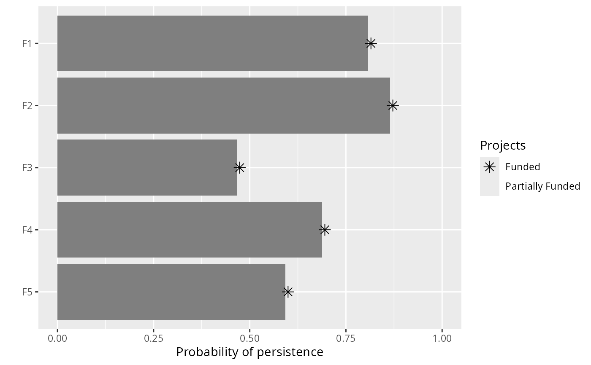
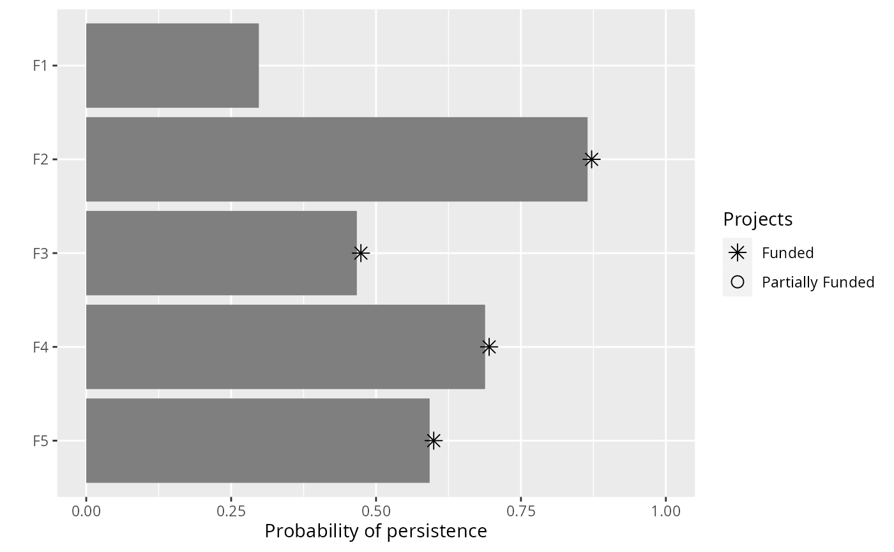

Set targets for a project prioritization problem() as a proportion
(between 0 and 1) of the maximum probability of
persistence associated with the best project for feature. For instance,
if the best project for a feature has an 80% probability of persisting,
setting a 50% (i.e. 0.5) relative target will correspond to a 40%
threshold probability of persisting.
add_relative_targets(x, targets) # S4 method for ProjectProblem,numeric add_relative_targets(x, targets) # S4 method for ProjectProblem,character add_relative_targets(x, targets)
| x | ProjectProblem object. |
|---|---|
| targets | Object that specifies the targets for each feature. See the Details section for more information. |
Targets are used to specify the minimum probability of persistence
for each feature in solutions. For minimum set objectives
(i.e. add_min_set_objective(), these targets
specify the minimum probability of persistence required for each species
in the solution. And for budget constrained objectives that use targets
(i.e.add_max_targets_met_objective()), these targets
specify the minimum threshold probability of persistence that needs to be
achieved to count the benefits for conserving these species.
Please note that attempting to solve problems with objectives that require
targets without specifying targets will throw an error.
The targets for a problem can be specified in several different ways:
numericvector of target values for each feature.
The order of the target values should correspond to the order
of the features in the data used to create the argument to x.
Additionally, for convenience, this type of argument can be a single
value to assign the same target to each feature.
characterspecifying the name of column in the
feature data (i.e. the argument to features in the
problem() function) that contains the persistence targets.
# load data data(sim_projects, sim_features, sim_actions) # build problem with minimum set objective and targets that require each # feature to have a level of persistence that is greater than or equal to # 70% of the best project for conserving it p1 <- problem(sim_projects, sim_actions, sim_features, "name", "success", "name", "cost", "name") %>% add_min_set_objective() %>% add_relative_targets(0.7) %>% add_binary_decisions() # print problem print(p1)#> Project Prioritization Problem #> actions F1_action, F2_action, F3_action, ... (6 actions) #> projects F1_project, F2_project, F3_project, ... (6 projects) #> features F1, F2, F3, ... (5 features) #> action costs: min: 0, max: 103.22583 #> project success: min: 0.81379, max: 1 #> objective: Minimum set objective #> targets: Relative targets [targets (min: 0.7, max: 0.7)] #> weights: default #> decisions Binary decision #> constraints: <none> #> solver: default# build problem with minimum set objective and specify targets that require # different levels of persistence for each feature p2 <- problem(sim_projects, sim_actions, sim_features, "name", "success", "name", "cost", "name") %>% add_min_set_objective() %>% add_relative_targets(c(0.2, 0.3, 0.4, 0.5, 0.6)) %>% add_binary_decisions() # print problem print(p2)#> Project Prioritization Problem #> actions F1_action, F2_action, F3_action, ... (6 actions) #> projects F1_project, F2_project, F3_project, ... (6 projects) #> features F1, F2, F3, ... (5 features) #> action costs: min: 0, max: 103.22583 #> project success: min: 0.81379, max: 1 #> objective: Minimum set objective #> targets: Relative targets [targets (min: 0.2, max: 0.6)] #> weights: default #> decisions Binary decision #> constraints: <none> #> solver: default# add a column name to the feature data with targets sim_features$target <- c(0.2, 0.3, 0.4, 0.5, 0.6) # build problem with minimum set objective and specify targets using # column name in the feature data p3 <- problem(sim_projects, sim_actions, sim_features, "name", "success", "name", "cost", "name") %>% add_min_set_objective() %>% add_relative_targets("target") %>% add_binary_decisions() # \dontrun{ # print problem print(p3)#> Project Prioritization Problem #> actions F1_action, F2_action, F3_action, ... (6 actions) #> projects F1_project, F2_project, F3_project, ... (6 projects) #> features F1, F2, F3, ... (5 features) #> action costs: min: 0, max: 103.22583 #> project success: min: 0.81379, max: 1 #> objective: Minimum set objective #> targets: Relative targets [targets (min: 0.2, max: 0.6)] #> weights: default #> decisions Binary decision #> constraints: <none> #> solver: default#> Gurobi Optimizer version 9.1.2 build v9.1.2rc0 (linux64) #> Thread count: 4 physical cores, 8 logical processors, using up to 1 threads #> Optimize a model with 46 rows, 42 columns and 92 nonzeros #> Model fingerprint: 0xe339eeda #> Variable types: 0 continuous, 42 integer (42 binary) #> Coefficient statistics: #> Matrix range [9e-02, 1e+00] #> Objective range [9e+01, 1e+02] #> Bounds range [1e+00, 1e+00] #> RHS range [3e-01, 1e+00] #> Found heuristic solution: objective 497.7671458 #> Presolve removed 45 rows and 20 columns #> Presolve time: 0.00s #> Presolved: 1 rows, 22 columns, 2 nonzeros #> Variable types: 0 continuous, 22 integer (22 binary) #> #> Explored 0 nodes (0 simplex iterations) in 0.00 seconds #> Thread count was 1 (of 8 available processors) #> #> Solution count 1: 497.767 #> #> Optimal solution found (tolerance 0.00e+00) #> Best objective 4.977671458279e+02, best bound 4.977671458279e+02, gap 0.0000%#> Gurobi Optimizer version 9.1.2 build v9.1.2rc0 (linux64) #> Thread count: 4 physical cores, 8 logical processors, using up to 1 threads #> Optimize a model with 46 rows, 42 columns and 92 nonzeros #> Model fingerprint: 0xe4091247 #> Variable types: 0 continuous, 42 integer (42 binary) #> Coefficient statistics: #> Matrix range [9e-02, 1e+00] #> Objective range [9e+01, 1e+02] #> Bounds range [1e+00, 1e+00] #> RHS range [2e-01, 1e+00] #> Found heuristic solution: objective 403.3678534 #> Presolve removed 38 rows and 17 columns #> Presolve time: 0.00s #> Presolved: 8 rows, 25 columns, 16 nonzeros #> Variable types: 0 continuous, 25 integer (25 binary) #> #> Explored 0 nodes (0 simplex iterations) in 0.00 seconds #> Thread count was 1 (of 8 available processors) #> #> Solution count 1: 403.368 #> #> Optimal solution found (tolerance 0.00e+00) #> Best objective 4.033678533759e+02, best bound 4.033678533759e+02, gap 0.0000%#> Gurobi Optimizer version 9.1.2 build v9.1.2rc0 (linux64) #> Thread count: 4 physical cores, 8 logical processors, using up to 1 threads #> Optimize a model with 46 rows, 42 columns and 92 nonzeros #> Model fingerprint: 0xe4091247 #> Variable types: 0 continuous, 42 integer (42 binary) #> Coefficient statistics: #> Matrix range [9e-02, 1e+00] #> Objective range [9e+01, 1e+02] #> Bounds range [1e+00, 1e+00] #> RHS range [2e-01, 1e+00] #> Found heuristic solution: objective 403.3678534 #> Presolve removed 38 rows and 17 columns #> Presolve time: 0.00s #> Presolved: 8 rows, 25 columns, 16 nonzeros #> Variable types: 0 continuous, 25 integer (25 binary) #> #> Explored 0 nodes (0 simplex iterations) in 0.00 seconds #> Thread count was 1 (of 8 available processors) #> #> Solution count 1: 403.368 #> #> Optimal solution found (tolerance 0.00e+00) #> Best objective 4.033678533759e+02, best bound 4.033678533759e+02, gap 0.0000%#> # A tibble: 1 x 21 #> solution status obj cost F1_action F2_action F3_action F4_action F5_action #> <int> <chr> <dbl> <dbl> <dbl> <dbl> <dbl> <dbl> <dbl> #> 1 1 OPTIMAL 498. 498. 1 1 1 1 1 #> # … with 12 more variables: baseline_action <dbl>, F1_project <dbl>, #> # F2_project <dbl>, F3_project <dbl>, F4_project <dbl>, F5_project <dbl>, #> # baseline_project <dbl>, F1 <dbl>, F2 <dbl>, F3 <dbl>, F4 <dbl>, F5 <dbl>#> # A tibble: 1 x 21 #> solution status obj cost F1_action F2_action F3_action F4_action F5_action #> <int> <chr> <dbl> <dbl> <dbl> <dbl> <dbl> <dbl> <dbl> #> 1 1 OPTIMAL 403. 403. 0 1 1 1 1 #> # … with 12 more variables: baseline_action <dbl>, F1_project <dbl>, #> # F2_project <dbl>, F3_project <dbl>, F4_project <dbl>, F5_project <dbl>, #> # baseline_project <dbl>, F1 <dbl>, F2 <dbl>, F3 <dbl>, F4 <dbl>, F5 <dbl>#> # A tibble: 1 x 21 #> solution status obj cost F1_action F2_action F3_action F4_action F5_action #> <int> <chr> <dbl> <dbl> <dbl> <dbl> <dbl> <dbl> <dbl> #> 1 1 OPTIMAL 403. 403. 0 1 1 1 1 #> # … with 12 more variables: baseline_action <dbl>, F1_project <dbl>, #> # F2_project <dbl>, F3_project <dbl>, F4_project <dbl>, F5_project <dbl>, #> # baseline_project <dbl>, F1 <dbl>, F2 <dbl>, F3 <dbl>, F4 <dbl>, F5 <dbl># }